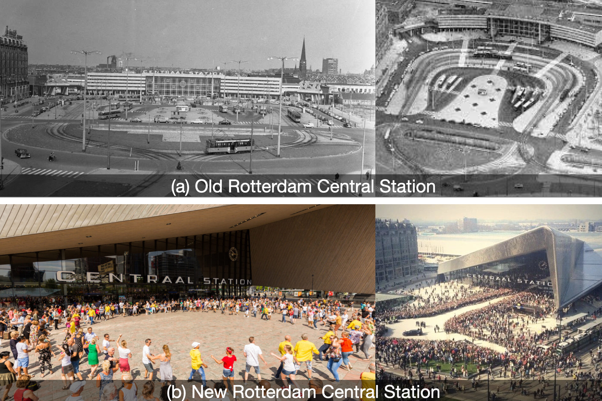

Contexts: It is debatable if station areas should prioritize human uses, as stations are fundamental transportation infrastructures, and hence, people would think of stations as primarily for vehicles. This debate exists in the urban planning field for the general urban environment and for other transport infrastructures, including streets (Bertolini, 2020).
In the past decades, there has been a paradigm shift from car-oriented to human-oriented planning; and for the design of railway station areas, at least in several situations, human-centered spaces should be a priority: 1) When station areas are shared with the cities and used by non-transport users (see principle Flexible use (1)), or 2) when it is necessary to organize leisure events to reduce space emptiness (see chapter 1 Introduction).
Problems: To support city non-transport use or leisure events, station spaces should be attractive. However, the human experience is often neglected in the design of some stations, where problematic features make them unattractive to people: 1) traffic elements dominating the spaces in railway station areas; 2) open spaces surrounded by traffic roads;
3) station buildings and spaces being monolithic, which makes them visually boring, and hard for people to move on foot for the long distance between facilities.
Solutions & Examples: Human-oriented spaces should have good spatial qualities that enhance human experience, as many as possible. The qualities depend on different cultural contexts, project contexts, different users with different evolving demands, and so on. It is impossible to exhaustively define all the qualities, and that is perhaps why Alexander calls it the ’quality without a name’ (Alexander, 1979). Nevertheless, in urban design field, scholars have explicated some common qualities or spatial features, for instances: human scale; enclosed spaces with well-defined boundaries (Sitte, 1889); positives edges that promote social activities, urban life (Gehl, 1987; Whyte, 2001), and recognition/identity of different areas (Jacobs, 1961; Lynch, 1960); complexity/diversity of visual elements (Ewing and Handy, 2009).
The spatial layout, besides space qualities, also matters for human experience. In fig. 24-left, we try to illustrate some features regarding the layout: a human-centered space should be a coherent space at a core position in the station areas or the station building, free from traffic elements, and free from intensive pass-by transport flow so that people are possible to stay there. In contrast, the layout in fig. 24-right does not have these features.
A significant example is the station plaza of the new Rotterdam Central Station, as against the old one (fig. 25). In the old scenario, the core area was occupied by transport elements, including trams, buses, car parking, and a metro station entrance building; Walkable spaces are located around this core area; Hardly any area is possible for people to stay. In the new scenario, the core area is designed for humans; Metro entrances, tram platforms, and bus stations are
moved aside; Car parking is located underground. During large events such as the Rotterdam Summer Carnival, the new station plaza is used without inference to the normal functioning of the station’s transport operations. While in the old scenario, assuming there would have been an event, the old plaza was hardly possible to use unless all the transport elements stopped functioning.
Addressing high fluctuations of use towards demand-responsive station areas, human-oriented spaces can be supple- mented with several smaller design principles, including Smooth level changes by landscape design (9), Redundant spaces with path regulation (11), Add installations and facilities (16) and Reconfigurable elements or spaces (17) & (26).
Pedestrian paths, although usually linear elements for passing through, can be designed as human-oriented spaces if these paths are also supposed to let people stay. From this perspective, human-oriented spaces can be used as a strategy to support City axes (25) and Reduce barriers to ease flow (22) & (23).
Limitations: There are some limitations of human-oriented spaces, including 1) the possible higher cost to create such spaces; 2) certain good qualities in one case may not necessarily be good in another case.

The old and the new Rotterdam Central Stations